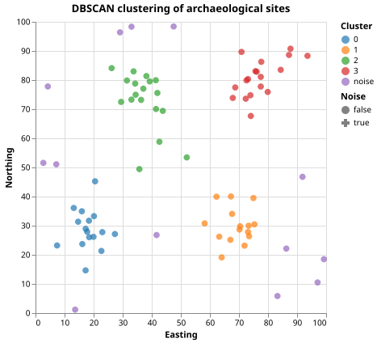

Spatial Clustering of Archaeological Sites
The Problem
- Archaeological surveys record the locations of sites (settlements, hearths, burial mounds) as 2-D coordinates on a map.
- Sites are rarely distributed uniformly: concentrations may represent settlements around a water source, nodes in a trade network, or ritual landscapes.
- Spatial clustering groups sites by proximity without requiring the analyst to specify the number of groups in advance.
- The approach here:
- Generate a synthetic set of site locations in which clusters at known centers are surrounded by random background noise.
- Apply DBSCAN (Density-Based Spatial Clustering of Applications with Noise) using a KD-tree for fast neighbor lookups.
- Label each site as a cluster member or as noise (an outlier).
- Visualize the result and verify that the planted clusters are recovered.
Why does DBSCAN not require the analyst to specify the number of clusters in advance, unlike k-means?
- Because DBSCAN uses a distance metric and k-means does not.
- Wrong: k-means also relies on distances (Euclidean distance to centroids); the difference is in how clusters are defined, not whether distance is used.
- Because DBSCAN defines clusters as regions of high point density connected
- by chains of nearby points, so the number of clusters emerges from the data
- given epsilon and min_samples.
- Correct: k-means partitions all points into exactly k groups regardless of their spatial arrangement; DBSCAN finds arbitrarily shaped dense regions and leaves low-density areas unlabelled as noise.
- Because DBSCAN always finds more clusters than k-means.
- Wrong: DBSCAN can find fewer, more, or the same number of clusters depending on the data and parameter choices.
- Because DBSCAN ignores noise points, which makes it faster.
- Wrong: DBSCAN explicitly identifies noise points as part of its output; ignoring outliers is not the reason it avoids pre-specifying k.
Core Points, Border Points, and Noise
- Given a neighborhood radius $\varepsilon$ (epsilon) and a density threshold $m$ (min_samples), DBSCAN classifies each site as one of three types:
- Core point: at least $m$ sites (including itself) lie within distance $\varepsilon$.
- Border point: within $\varepsilon$ of a core point but not itself a core point.
- Noise point: neither a core point nor within $\varepsilon$ of one; labelled $-1$.
- A cluster is the maximal set of sites reachable from any core point by a chain of core-to-neighbor hops within $\varepsilon$.
Five sites are arranged so that sites A, B, C, D are all within distance epsilon of each other, and site E is 2*epsilon away from all others. With min_samples = 3, how many clusters does DBSCAN find?
Epsilon-Ball Queries with a KD-Tree
- Checking all $\binom{n}{2}$ pairs to find neighbors costs $O(n^2)$.
- A KD-tree indexes points in $k$ dimensions so that all sites within distance $\varepsilon$ of a query point can be retrieved in $O(\log n)$ time on average.
scipy.spatial.KDTree.query_ball_tree(tree, eps)returns a list in which entry $i$ contains the indices of all sites within $\varepsilon$ of site $i$, including $i$ itself; computing this for all points at once is faster than issuing $n$ individual queries.
Generating Synthetic Site Data
- Four cluster centers are placed in a 100x100 coordinate space (units: arbitrary survey units such as kilometres).
- Sites within each cluster are drawn from an isotropic Gaussian with standard deviation 5, so most sites lie within 10 units of the center.
- Noise points are scattered uniformly at random across the entire survey region.
def make_sites(
centers=CLUSTER_CENTERS,
spread=CLUSTER_SPREAD,
sites_per_cluster=SITES_PER_CLUSTER,
n_noise=N_NOISE,
region_min=REGION_MIN,
region_max=REGION_MAX,
seed=SEED,
):
"""Return a Polars DataFrame of synthetic archaeological site locations.
Columns:
easting -- x-coordinate in the survey region
northing -- y-coordinate in the survey region
true_cluster -- integer cluster index (0, 1, ...) for clustered sites;
-1 for noise points
Clustered sites are drawn from isotropic Gaussian distributions centred on
each entry in centers. Noise points are placed uniformly at random within
the survey region.
"""
rng = np.random.default_rng(seed)
records = []
for cluster_id, (cx, cy) in enumerate(centers):
offsets = rng.normal(scale=spread, size=(sites_per_cluster, 2))
for dx, dy in offsets:
records.append(
{
"easting": float(cx + dx),
"northing": float(cy + dy),
"true_cluster": cluster_id,
}
)
for _ in range(n_noise):
records.append(
{
"easting": float(rng.uniform(region_min, region_max)),
"northing": float(rng.uniform(region_min, region_max)),
"true_cluster": -1,
}
)
return pl.DataFrame(records)
Running DBSCAN
- The neighborhood radius $\varepsilon = 12$ captures most intra-cluster pairs (cluster spread $\sigma = 5$, so $\varepsilon = 2.4\sigma$) while the cluster centers are at least 45 units apart, ensuring no inter-cluster reachability.
- $m = 3$ requires at least two neighbors beyond the site itself, which is enough to define a dense region without being so strict that legitimate cluster members become noise.
def dbscan(coords, eps, min_samples):
"""Cluster 2-D site coordinates using the DBSCAN algorithm.
Parameters
----------
coords : (n, 2) float array of (easting, northing) values
eps : neighborhood radius; two sites are neighbors if their
Euclidean distance is <= eps
min_samples : a site is a core point if at least min_samples sites
(including itself) lie within its eps-neighborhood
Returns
-------
labels : length-n integer array; label >= 0 is the cluster index,
label == -1 means the site is noise (not part of any cluster)
The algorithm uses scipy.spatial.KDTree for efficient neighborhood queries.
Cluster expansion is breadth-first: starting from each unvisited core
point, all density-reachable sites are assigned the same cluster label.
"""
tree = KDTree(coords)
neighbors = tree.query_ball_tree(tree, eps)
is_core = np.array([len(nbrs) >= min_samples for nbrs in neighbors])
labels = np.full(len(coords), -1, dtype=int)
cluster_id = 0
for i in range(len(coords)):
if labels[i] != -1 or not is_core[i]:
continue
queue = [i]
labels[i] = cluster_id
while queue:
j = queue.pop()
for k in neighbors[j]:
if labels[k] == -1:
labels[k] = cluster_id
if is_core[k]:
queue.append(k)
cluster_id += 1
return labels
A site has 4 sites within distance epsilon (including itself) and min_samples = 5. What is its DBSCAN classification?
- Core point, because it has neighbors within epsilon.
- Wrong: core-point status requires at least min_samples neighbors including the point itself; 4 < 5, so this site does not qualify.
- Border point or noise, depending on whether it is within epsilon of
- a core point.
- Correct: with fewer than min_samples neighbors it cannot be a core point; if a core point is within epsilon it becomes a border point, otherwise noise.
- Noise, because it does not have enough neighbors.
- Wrong: noise is only assigned to points that are not within epsilon of any core point; a non-core point near a core point is a border point, not noise.
- Core point, because it has at least one neighbor.
- Wrong: having at least one neighbor is not sufficient; the threshold is min_samples, which is 5 here.
Visualizing the Clusters
def plot_clusters(df, filename):
"""Save a scatter map coloured by cluster label."""
chart = (
alt.Chart(df)
.mark_point(size=60, filled=True)
.encode(
x=alt.X("easting:Q", title="Easting", scale=alt.Scale(domain=[0, 100])),
y=alt.Y("northing:Q", title="Northing", scale=alt.Scale(domain=[0, 100])),
color=alt.Color(
"cluster_label:N",
title="Cluster",
scale=alt.Scale(scheme="category10"),
),
shape=alt.Shape(
"is_noise:N",
scale=alt.Scale(domain=["false", "true"], range=["circle", "cross"]),
legend=alt.Legend(title="Noise"),
),
)
.properties(
width=360,
height=360,
title="DBSCAN clustering of archaeological sites",
)
)
chart.save(filename)

Testing
Site count
- The generator must produce exactly $|centers| \times$
sites_per_cluster+n_noiserows.
Isolated singleton is noise
- Two points that are more than epsilon apart with
min_samples = 3must both be labelled $-1$.
Dense patch is one cluster
- Five points that are all within epsilon of each other must form exactly one cluster with label 0.
Two disjoint groups become two clusters
- Two groups of points separated by more than epsilon must each form their own cluster, producing exactly two distinct cluster labels.
Isolated singleton stays noise
- A single point far from all cluster members must remain labelled $-1$ even when the other points form a valid cluster.
Correct cluster count on synthetic data
- Running DBSCAN with the lesson parameters on the synthetic corpus must recover exactly four clusters.
Noise fraction is reasonable
- The number of sites labelled noise must not exceed twice the planted noise count; with cluster spread 5 and epsilon 12, very few cluster members should be mislabelled.
import numpy as np
from generate_archcluster import (
make_sites,
CLUSTER_CENTERS,
SITES_PER_CLUSTER,
N_NOISE,
)
from archcluster import dbscan, EPS, MIN_SAMPLES
def test_site_count():
# Total rows must equal clustered sites plus noise.
df = make_sites()
expected = len(CLUSTER_CENTERS) * SITES_PER_CLUSTER + N_NOISE
assert df.height == expected
def test_no_single_point_cluster():
# With MIN_SAMPLES = 3, an isolated point must be labelled noise.
# Two well-separated singletons can never be core points.
coords = np.array([[0.0, 0.0], [100.0, 100.0]])
labels = dbscan(coords, eps=1.0, min_samples=3)
assert all(lbl == -1 for lbl in labels)
def test_dense_patch_is_one_cluster():
# Five points within eps=1 of each other must form exactly one cluster.
coords = np.array(
[
[0.0, 0.0],
[0.5, 0.0],
[0.0, 0.5],
[0.5, 0.5],
[0.25, 0.25],
]
)
labels = dbscan(coords, eps=1.0, min_samples=3)
assert len(set(labels[labels >= 0])) == 1
assert all(lbl == 0 for lbl in labels)
def test_two_disjoint_clusters():
# Two groups separated by more than eps must become two clusters.
group_a = np.random.default_rng(0).normal(loc=[0, 0], scale=0.3, size=(10, 2))
group_b = np.random.default_rng(1).normal(loc=[50, 50], scale=0.3, size=(10, 2))
coords = np.vstack([group_a, group_b])
labels = dbscan(coords, eps=1.0, min_samples=3)
assert len(set(labels[labels >= 0])) == 2
def test_noise_not_merged_into_cluster():
# A singleton far from any cluster must remain labelled -1.
close = np.array([[0.0, 0.0], [0.5, 0.0], [0.0, 0.5], [0.5, 0.5]])
isolated = np.array([[50.0, 50.0]])
coords = np.vstack([close, isolated])
labels = dbscan(coords, eps=1.0, min_samples=3)
assert labels[-1] == -1
def test_correct_cluster_count_on_synthetic_data():
# DBSCAN with the lesson parameters must recover all four planted clusters.
df = make_sites()
coords = df.select(["easting", "northing"]).to_numpy()
labels = dbscan(coords, EPS, MIN_SAMPLES)
n_clusters = len(set(labels[labels >= 0]))
assert n_clusters == len(CLUSTER_CENTERS)
def test_noise_fraction_reasonable():
# Noise points must not exceed noise points planted plus any cluster
# members that fall outside EPS reach; cluster spread is 5 and EPS is 12
# so very few cluster members should be mislabelled as noise.
df = make_sites()
coords = df.select(["easting", "northing"]).to_numpy()
labels = dbscan(coords, EPS, MIN_SAMPLES)
n_noise = (labels == -1).sum()
# Allow up to 2x the planted noise count for edge cases.
assert n_noise <= 2 * N_NOISE
Spatial clustering key terms
- Spatial clustering
- The task of partitioning a set of geographic points into groups whose members are closer to each other than to points in other groups, without requiring the number of groups to be specified in advance
- DBSCAN
- Density-Based Spatial Clustering of Applications with Noise; a clustering algorithm that defines clusters as maximal sets of points connected through chains of eps-neighbors, and labels low-density points as noise
- Epsilon-neighborhood
- The set of all points within distance epsilon of a given point; used in DBSCAN to define local density; queried efficiently using a KD-tree
- Core point
- A point whose epsilon-neighborhood contains at least min_samples points (including itself); core points are the seeds from which clusters expand
- Noise point
- A point that is not a core point and is not within epsilon of any core point; labelled -1 by DBSCAN and not assigned to any cluster
- KD-tree
- A binary space-partitioning tree that indexes k-dimensional points to support
efficient range queries;
scipy.spatial.KDTreereturns all points within a given distance in O(log n) time on average
Exercises
Parameter sensitivity
Run DBSCAN on the synthetic data with epsilon values of 5, 12, and 25 and min_samples values of 2, 3, and 5 (nine combinations in total). Record the number of clusters and noise points for each combination. Which settings over-merge distinct clusters? Which under-merge and produce many small fragments?
Cluster purity
For each DBSCAN-assigned cluster, compute the fraction of its members that
belong to the same planted cluster (the true_cluster column from the generator).
A perfectly recovered cluster has purity 1.0.
What is the minimum purity across all four clusters at the lesson parameters?
Nearest-neighbor distance plot
Before choosing epsilon, plot the distribution of each site's distance to its nearest neighbor (excluding itself). The elbow in this distribution is a common heuristic for selecting epsilon. Does the elbow in this synthetic dataset agree with the lesson value of 12?
Convex hull of each cluster
For each recovered cluster, compute the convex hull of its member sites using
scipy.spatial.ConvexHull and report the hull area.
Larger areas suggest more dispersed clusters.
Are the hull areas consistent with the planted Gaussian spread of 5?